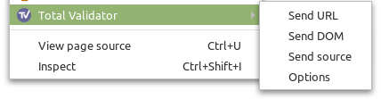

Documentation > Browser extensions
Start the Total Validator application and set the required options in the usual way (ignoring the Start page). Browse to the page you wish to test and click the Total Validator icon on your browser toolbar, or use a keyboard shortcut, to start testing the current page.
Alternatively select the appropriate option from the context menu (right click the page):

Depending on which option you've chosen the extension will either send the URL of the current page, the DOM, or the source of the page to the Total Validator application to test it. With the Pro and CI versions you can test a whole website this way with just one click.
During operation the application will automatically minimise or shrink to the System Tray.
If you wish to start Total Validator already minimised, such as when starting your computer, then use the Start Minimised menu option.
Extension options
To access and set the extension options use the context menu, or right mouse click the toolbar icon and choose Options.
Toolbar action
What to send to the application when you click the toolbar icon
Send URL: This sends the url of the current page to the application for testing. This is equivalent to entering the url in the Start page in the application.
Send DOM: Normally Total Validator tests the web page before any JavaScript has been run. If you use JavaScript to modify the page, then select this to send the page after any initial JavaScript has run. Selecting this option also allows additional accessibility testing to be performed. The source in this case is not the original web page but is generated from your browser's DOM, so you may see some issues that do not exist in the original web page, and line numbers will often differ. Note: With this option broken links can only be tested for if you have the Pro or CI versions.
Send source: If Send URL does not work for you
(for example, some unsupported authentication system is protecting pages), then use this option to send the
source of the current web page for testing instead. Note: With this option
broken links can only be tested for if you have the Pro or CI versions.
Advanced
Listen port: This is set to 9889 by default. This is the TCP port that the Total Validator application listens to for requests from the browser extension to test pages. Whatever you enter here must match the value you've entered in the application. Any number in the range 1-65535 is valid, but you must choose one that does not conflict with any other service you having running.
Skip URL check: Normally this is not selected. It should only be used when there are cancellation issues.
Keep Alive: This should be 2 seconds. This should not be changed unless advised by the Total Validator Support Team.
Compatible: Normally this is not selected. It may be used with v5.7 of the extension, to allow it to work with v16.3.0-v17.0.1 of the Pro or CI application.
Debug: This should not be selected unless advised by the Total Validator Support Team because it will slow everything down.
Testing multiple source pages with Total Validator Pro or CI
With the Pro and CI versions, Send DOM and Send source will automatically step through the website just like Send URL, and test as many pages as you wish.
You will see each page being displayed in your browser in turn and on completion the original page will be displayed, and a new tab opened with the results.
During testing, you should try to avoid using your browser and never attempt to start a new test while a current one is still executing. Always use the Cancel button on the application's progress window to cancel first, otherwise you may get unexpected and confusing results.
When testing DOM-generated source, you may need to slow the process down so that any initial JavaScript has fully run before the page is sent to the application. For this, use the Page pause option which will add a delay between loading each page and sending the DOM to the application.
Keyboard shortcuts
By default the keyboard shortcut equivalent to clicking the toolbar icon is Ctrl+Shift+V (Command+Shift+V for macOS). You can use a different keyboard shortcut, remove it altogether, and also define shortcuts for the context menu options as follows:
Firefox: Go to about:addons, click on the cog icon and select Manage Extension Shortcuts, and edit or remove the shortcuts displayed for Total Validator.
Chrome: Go to chrome://extensions/shortcuts, and edit or remove the shortcuts displayed.
Edge: Go to edge://extensions/shortcuts, and edit or remove the shortcuts displayed.
Issues
If you have a problem that isn't covered below then complete the Contact Form to report it. Don't forget to leave a valid email address where you can be contacted.
Incompatible extension and application versions
If you see this message then the browser extension and Total Validator application are running incompatible versions. To resolve this you will need to upgrade the application to the latest version, or (if possible) downgrade your browser extension to a previous version. The Application and Extension change logs may have more information about this issue.
Could not contact the Total Validator application
If this appears you may have simply forgotten to start the Total Validator application. This must be running when using an extension.
Alternatively, the firewall on your computer may have been configured to block Total Validator from accepting connections from extensions: When starting Total Validator, you may have seen a message about allowing incoming connections to either Total Validator or Java and decided to deny these. In this case you will have to amend your firewall to allow them again.
Total Validator only listens for local connections from your browser, and only on a specific TCP port. This Listen port may already be being used by another service preventing the application from listening. Usually you will see a message when starting the application if this is the case. If necessary, you can change the Listen port in the Application Options and update the options page in the extension to match, as described above.
Extension not installed or not configured correctly
To use this feature, you must have a Total Validator extension installed and enabled in your browser, and the correct options configured:
Firefox: Go to about:addons, find the Total Validator extension and check that it is enabled.
Chrome: Go to chrome://extensions, find the Total Validator extension and check that it is enabled. Click Details and under Site access ensure that On all sites is selected. Also check that the Allow access to file URLs option is enabled as this may also be required.
Edge: Go to edge://extensions, find the Total Validator extension and check that it is enabled. Click Details and under Site access ensure that On all sites is selected. Also check that the Allow access to file URLs option is enabled as this may also be required.
Browser needs to be manually started
When starting a DOM validation from the Total Validator application, we have found that on some systems and with some browsers, the browser must already be running first. So please try again with the browser already open.
Validation failed
If this message appears then there may be a conflict between Total Validator and some other service. You can change the Listen port in the Application Options and update the options page in the extension to match, as described above.
Could not retrieve source of page
If this appears then the page you are trying to test has unexpectedly disappeared from the web server, or is no longer visible due to authentication issues. Try reloading the page and repeating the test.
Could not contact the content script
If this appears after you have just installed or enabled the extension, you may need to reload pages in your browser before you can test them.
You should also check the extension is enabled and configured correctly (see above), and restart your browser to ensure all settings have been applied.
Nothing happens
Firefox: Open the browser console (Ctrl+Shift+J) and look for any of the messages above, or other messages mentioning Total Validator which may explain the issue.
Chrome: Go to chrome://extensions, check the Developer Mode checkbox, find the Total Validator extension and click the Inspect views: background page link, then look at the Console tab for any error messages.
Edge: Go to edge://extensions, check the Developer Mode checkbox, find the Total Validator extension and click the Inspect views: background page link, then look at the Console tab for any error messages.
Multi-page testing cancels before finishing
When testing multiple pages of source or DOM-generated source, it may self-cancel before completing. This can be due to security restrictions of the website. The last page attempted should still be displayed in your browser: Press F12 and look at the Console tab for any error messages which may explain why it failed. If there is nothing suspicious then you could try the Skip URL check option.
Browser continues multi-page testing after cancelling it, or after an error
Following a cancellation or an error the browser may keep on testing, possibly opening multiple tabs. Immediately close your browser and/or Total Validator to stop this.
The keyboard shortcut doesn't work
If the keyboard shortcut doesn't work, then it may clash with another extension, or a shortcut defined by the browser itself. In this case try defining a different key combination as described above.